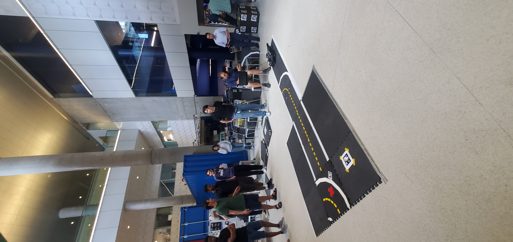
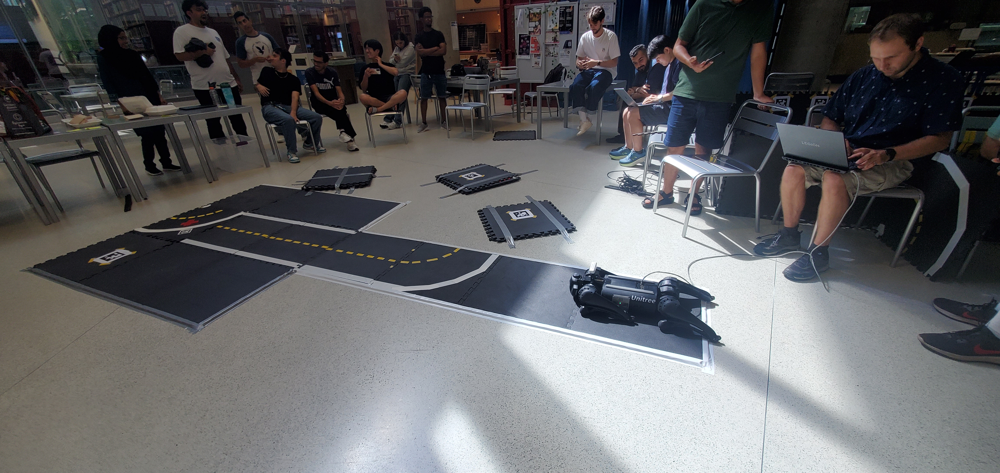
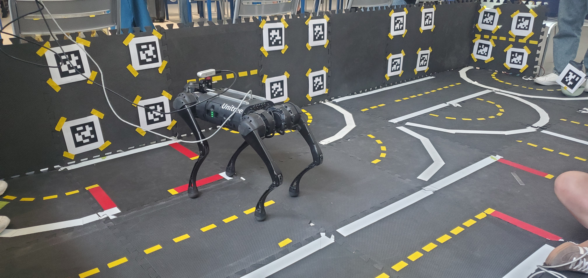
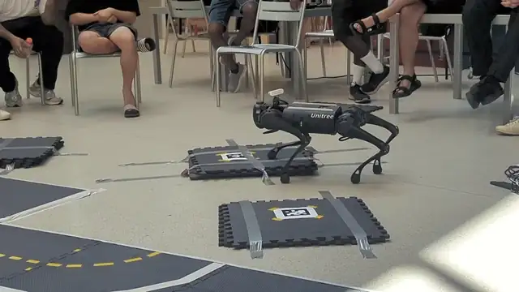
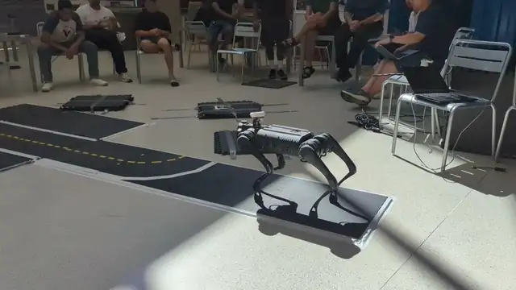
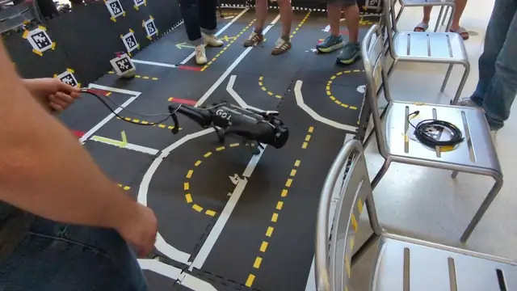
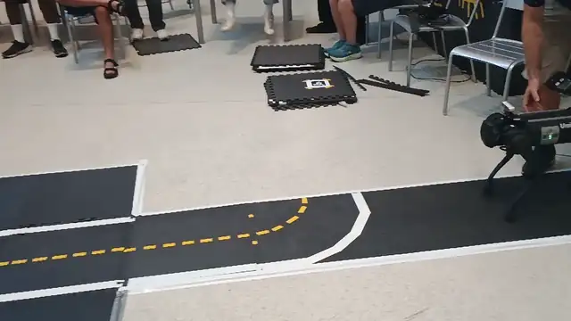

1st Place — MRSS Competition
The award
Our team took first place in the competition held on June 14, 2024, and received a personalized trophy cup and a RobotShop gift prize.
The challenge
[WIP]
Our team & approach
[WIP]
What I learned
[WIP]

Montréal Robotics Summer School
1st Place, 2024 · Organizing Team, 2026 · Mila & Université de Montréal, Campus MIL
The Montréal Robotics Summer School (MRSS) brings students together for hands-on robotics, hosted at Mila – Quebec AI Institute and Université de Montréal, Campus MIL. I first joined as a participant and won the competition and I later came back as part of the organizing team.
[WIP]
Our team took first place in the competition held on June 14, 2024, and received a personalized trophy cup and a RobotShop gift prize.
[WIP]
[WIP]
[WIP]
Before the school, I ran preliminary tests on the Unitree Go2 quadruped to check the previous year's codebase, so other members of the team could pick it up and carry the work forward.
[WIP]
My main role during the event was assisting students: helping them get started with the robots, debugging alongside them, and supporting their teams through the challenge.
[WIP]




Teams tackling the robot challenges during the school.




As a former participant, it was a real pleasure to return to MRSS as one of the helpers, and to support new students through the same experience that meant so much to me.